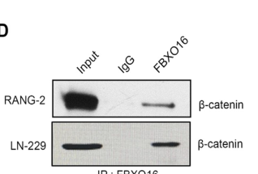

FBXO16 (F-box only protein 16) is an F-box "other" (FBXO) family protein that serves as the substrate-recognition component of an SCF (SKP1-CUL1-F-box protein) / CRL1 Cullin-RING E3 ubiquitin-protein ligase complex. Through its F-box domain (residues 86-132) it docks onto SKP1 within the SCF scaffold, while its C-terminal region recruits specific substrate proteins for ubiquitination and subsequent proteasomal degradation; the catalytic transfer of ubiquitin is performed by the RING subunit RBX1 and an E2 enzyme, not by FBXO16 itself; consistently, its F-box domain is required for assembling a functional ligase complex while its C-terminal region mediates substrate recognition (e.g. binding the RRM3 domain of hnRNPL and the C-terminus being essential for beta-catenin binding). FBXO16 acts predominantly in the nucleus and drives K48-linked polyubiquitination of its targets. Reported substrates include the nuclear pool of beta-catenin/CTNNB1 (suppressing Wnt/TCF output such as c-Myc and Cyclin D1), the RNA-binding protein hnRNPL (whose degradation restrains MAPK/RAS/Wnt outputs), the autophagy-initiating kinase ULK1 (K48-linked polyubiquitination, suppressing autophagy), and the NF-kappa-B subunit RELA/p65 (as the substrate-recognition component of a PDLIM2-containing CRL1 complex that degrades nuclear p65). Through these targets FBXO16 has been implicated as a putative tumor suppressor (attenuating beta-catenin-driven epithelial-to-mesenchymal transition and ovarian/glioblastoma progression; in ovarian cancer it is down-regulated by MIR937 amplification, stabilizing ULK1) and as a negative regulator of NF-kappa-B inflammatory signaling. The protein is expressed in several tissues (heart, spleen, colon; tissue-enhanced in epididymis and pituitary) and exists as two alternatively spliced isoforms.
| GO Term | Evidence | Action | Reason |
|---|---|---|---|
|
GO:0005515
protein binding
|
IPI
PMID:32296183 A reference map of the human binary protein interactome. |
KEEP AS NON CORE |
Summary: Binary interactome (Y2H) interactions of FBXO16 captured by IntAct, including LMO1, MORF4L1/MORF4L2, NXT1 and TRIM54. These are real interactions but the bare protein binding term is uninformative about molecular function.
Reason: Documents genuine physical interactions recorded by IntAct, but per curation guidelines bare protein binding is uninformative and not a core molecular function. The functionally meaningful substrate interactions (CTNNB1, HNRNPL, RELA, ULK1) come from dedicated studies, not this high-throughput screen.
Supporting Evidence:
file:human/FBXO16/FBXO16-uniprot.txt
Q8IX29; P25800: LMO1; NbExp=3; IntAct=EBI-12063229, EBI-8639312;
file:human/FBXO16/FBXO16-uniprot.txt
Q8IX29; Q9UKK6: NXT1; NbExp=5; IntAct=EBI-12063229, EBI-301889;
|
|
GO:0019005
SCF ubiquitin ligase complex
|
NAS
PMID:34445249 The SCF Complex Is Essential to Maintain Genome and Chromoso... |
ACCEPT |
Summary: FBXO16 is the substrate-recognition (F-box) subunit of an SCF (SKP1-CUL1-F-box) E3 ubiquitin ligase complex, as recorded by ComplexPortal (CPX-7926, "SCF E3 ubiquitin ligase complex, FBXO16 variant"). This is the core localization/complex membership of the protein.
Reason: Core complex membership. FBXO16 contains a bona fide F-box domain (residues 86-132) and is annotated by ComplexPortal as the variable F-box subunit of an SCF complex; UniProt explicitly states it is part of an SCF ligase complex.
Supporting Evidence:
file:human/FBXO16/FBXO16-uniprot.txt
Substrate recognition component of an SCF (SKP1-CUL1-F-box protein) E3 ubiquitin-protein ligase complex that mediates the ubiquitination and subsequent proteasomal degradation of target proteins.
file:human/FBXO16/FBXO16-uniprot.txt
Part of a SCF (SKP1-cullin-F-box) protein ligase complex.
|
|
GO:0031146
SCF-dependent proteasomal ubiquitin-dependent protein catabolic process
|
NAS
PMID:34445249 The SCF Complex Is Essential to Maintain Genome and Chromoso... |
ACCEPT |
Summary: As the substrate receptor of an SCF complex, FBXO16 directs target proteins (e.g. nuclear beta-catenin, hnRNPL, RELA, ULK1) into SCF-dependent proteasomal degradation. This captures the core biological process FBXO16 participates in.
Reason: Core biological process. UniProt FUNCTION documents that FBXO16 mediates ubiquitination and subsequent proteasomal degradation of multiple substrates as the substrate-recognition component of an SCF complex, consistent with this SCF-dependent catabolic process term. Falcon-sourced primary literature grounds this with multiple validated K48-linked substrates (nuclear beta-catenin, hnRNPL, ULK1, nuclear p65/RELA), matching the functional placement of FBXO16 as an F-box/SCF (CRL1) substrate-recognition receptor.
Supporting Evidence:
file:human/FBXO16/FBXO16-uniprot.txt
Substrate recognition component of an SCF (SKP1-CUL1-F-box protein) E3 ubiquitin-protein ligase complex that mediates the ubiquitination and subsequent proteasomal degradation of target proteins.
file:human/FBXO16/FBXO16-deep-research-falcon.md
FBXO16 physically interacts with β-catenin and promotes **K48-linked polyubiquitination** and **proteasome-mediated degradation** of the **nuclear pool** of β-catenin, suppressing Wnt/TCF transcriptional output.
|
Q: Which E2 conjugating enzyme and ubiquitin-chain topology does the FBXO16-containing SCF complex use across its different substrates, and is the K48-linked chain reported for ULK1 a general feature of FBXO16-mediated degradation?
Q: How is FBXO16 substrate selection regulated (e.g. by substrate phosphodegron, FBXO16 expression/MIR937 amplification, accessory partners such as PDLIM2, or subcellular localization such as the nuclear beta-catenin/p65 pools), and which substrate relationship is physiologically dominant in a given tissue?
Q: Is FBXO16 a predominantly nuclear CRL1 substrate receptor as the functional studies suggest, and does its nuclear localization explain its preference for nuclear substrate pools (nuclear beta-catenin, hnRNPL, nuclear p65)?
Experiment: Reconstitute the FBXO16-SKP1-CUL1-RBX1 SCF complex in vitro with a defined E2 panel and a candidate substrate (e.g. recombinant ULK1, CTNNB1, or hnRNPL) to confirm that FBXO16 functions as a substrate adaptor, map the C-terminal substrate-binding region, and determine the ubiquitin-chain linkage produced on each substrate.
Experiment: Perform quantitative ubiquitinome/proteome profiling in FBXO16-knockout versus wild-type cells (and with F-box-domain deletion mutants that cannot bind SKP1) to define the endogenous substrate repertoire and confirm that substrate stabilization requires intact SCF assembly.
Experiment: Determine FBXO16 subcellular localization (fractionation, immunofluorescence, tagged endogenous knock-in) and test whether nuclear targeting is required for degradation of nuclear substrates such as beta-catenin and p65, including the contribution of the PDLIM2-containing CRL1 complex.
The research report should be a detailed narrative explaining the function, biological processes, and localization of the gene product. Citations should be given for all claims.
You should prioritize authoritative reviews and primary scientific literature when conducting research. You can supplement
this with annotations you find in gene/protein databases, but these can be outdated or inaccurate.
We are specifically interested in the primary function of the gene - for enzymes, what reaction is catalyzed, and what is the substrate specificity? For transporters, what is the substrate? For structural proteins or adapters, what is the broader structural role? For signaling molecules, what is the role in the pathway.
We are interested in where in or outside the cell the gene product carries out its function.
We are also interested in the signaling or biochemical pathways in which the gene functions. We are less interested in broad pleiotropic effects, except where these elucidate the precise role.
Include evidence where possible. We are interested in both experimental evidence as well as inference from structure, evolution, or bioinformatic analysis. Precise studies should be prioritized over high-throughput, where available.
The literature gathered here consistently studies FBXO16 (F-box only protein 16) as an F-box domain–containing substrate-receptor component of CRL1/SCF (CUL1–SKP1–RBX1) ubiquitin ligase complexes, matching the target identity and domain logic in UniProt (F-box domain(s) plus additional C-terminal substrate-recognition region). No evidence reviewed corresponded to a different gene with a confusingly similar symbol. (ji2021fbxo16mediatedhnrnplubiquitination pages 1-2, ji2021fbxo16mediatedhnrnplubiquitination pages 6-8, ji2021fbxo16mediatedhnrnplubiquitination pages 4-6)
F-box proteins are generally understood to function as substrate-recognition receptors in SCF/CRL1 E3 ubiquitin ligase complexes, where the F-box motif mediates association with SKP1, and the cullin scaffold (CUL1) with RBX1 recruits an E2 enzyme to catalyze ubiquitin transfer to substrates. FBXO16 behaves consistently with this architecture: its F-box domain is required for assembling functional ubiquitin-ligase activity, whereas a C-terminal region mediates substrate binding/recognition. (ji2021fbxo16mediatedhnrnplubiquitination pages 6-8, ji2021fbxo16mediatedhnrnplubiquitination pages 4-6, khan2019attenuationoftumor pages 4-6, sugimotoishige2025fbxo16mediatesdegradation pages 8-9)
For FBXO16, the “primary function” is not to catalyze a chemical reaction like an enzyme active site; rather, it confers substrate specificity on a ubiquitin ligase complex by binding selected proteins and positioning them for polyubiquitination and usually proteasomal degradation (often via K48-linked polyubiquitin). (khan2019attenuationoftumor pages 4-6, zhang2024mir937amplificationpotentiates pages 7-10, ji2021fbxo16mediatedhnrnplubiquitination pages 8-9)
Across primary mechanistic studies, FBXO16 has been experimentally validated to target multiple proteins for ubiquitin-dependent degradation:
Two consistent structure–function principles emerge:
Khan et al. provide direct figure-level evidence supporting: (i) FBXO16–β-catenin interaction, (ii) increased total and K48-linked ubiquitination of nuclear β-catenin with FBXO16 expression, and (iii) domain mapping showing the C-terminus is essential for β-catenin interaction. (khan2019attenuationoftumor media a83ab1b6)
FBXO16 functional evidence strongly emphasizes nuclear contexts:
Taken together, FBXO16 appears to be a nuclear-relevant CRL1 substrate receptor with substrate-dependent localization (and some evidence for both cytoplasmic and nuclear presence in the NF-κB study’s discussion referencing HPA). (sugimotoishige2025fbxo16mediatesdegradation pages 7-8)
FBXO16 suppresses Wnt signaling by promoting nuclear β-catenin degradation. In glioblastoma models, this is linked to reduced expression of canonical β-catenin/TCF outputs such as c-Myc and Cyclin D1, reduced TOPFlash reporter activity, and reduced malignant phenotypes. (khan2019attenuationoftumor pages 4-6, khan2019attenuationoftumor pages 1-2)
In ovarian cancer models, FBXO16-mediated hnRNPL degradation is associated with suppression of malignant phenotypes and reduction of multiple oncogenic signaling outputs. In FBXO16 KO conditions, hnRNPL knockdown was sufficient to reverse activation of MAPK, RAS, and Wnt signaling described in that study. (ji2021fbxo16mediatedhnrnplubiquitination pages 8-9)
A 2024 study identifies ULK1 as a degradation substrate of FBXO16 and links FBXO16 to autophagy suppression: FBXO16 overexpression reduces ULK1 and shifts autophagy markers (e.g., lower LC3II/I ratio, increased p62), while FBXO16 knockdown increases ULK1 protein. (zhang2024mir937amplificationpotentiates pages 7-10)
In dendritic cell contexts, Fbxo16 functions as a substrate receptor for p65 in a PDLIM2-containing CRL1 complex; Fbxo16 promotes p65 degradation and thereby limits NF-κB transactivation and pro-inflammatory cytokine expression (e.g., IL-6). (sugimotoishige2025fbxo16mediatesdegradation pages 6-7, sugimotoishige2025fbxo16mediatesdegradation pages 8-9)
Zhang et al. (published Oct 2024 in Cell Death & Disease) propose and experimentally support a regulatory axis where MIR937 amplification increases miR-937-5p, which targets the 3′ UTR of FBXO16, reducing FBXO16 levels and thereby restricting FBXO16’s degradative effect on ULK1, promoting autophagy and proliferative capacity in high-grade serous ovarian cancer models. (zhang2024mir937amplificationpotentiates pages 7-10)
Open Targets aggregates genetic/literature evidence linking FBXO16 to neoplasm-related terms and specific cancers (e.g., ovarian cancer, glioblastoma multiforme) and also reports associations for amyotrophic lateral sclerosis (ALS) in its evidence set. While these are not mechanistic proofs, they are useful for prioritizing disease contexts for follow-up experimentation. (OpenTargets Search: -FBXO16)
Primary mechanistic studies support FBXO16 as a tumor-suppressive regulator through degradation of oncogenic effectors (β-catenin, hnRNPL, ULK1-mediated autophagy), suggesting potential translational applications:
The 2024 MIR937/miR-937-5p → FBXO16 → ULK1 axis provides a concrete example of a potentially druggable regulatory layer: blocking miR-937-5p or restoring FBXO16 could reduce ULK1-mediated autophagy that supports tumor cell fitness. (zhang2024mir937amplificationpotentiates pages 7-10)
The strongest, repeatedly supported functional annotation is:
FBXO16 is a CRL1/SCF substrate-recognition protein that drives K48-linked polyubiquitination and proteasomal degradation of select substrates, with prominent nuclear activity.
This is supported by multiple primary mechanistic datasets across different substrates and contexts (β-catenin, hnRNPL, ULK1; nuclear p65 in immune context). (khan2019attenuationoftumor pages 4-6, ji2021fbxo16mediatedhnrnplubiquitination pages 8-9, zhang2024mir937amplificationpotentiates pages 7-10, sugimotoishige2025fbxo16mediatesdegradation pages 8-9)
FBXO16 substrates appear context-dependent (tumor type, cell state, and possibly binding partners like PDLIM2). For example, ULK1 is prominent in one ovarian cancer mechanism, while hnRNPL is emphasized in another; the ULK1-focused study notes hnRNPL is not altered in that specific context, implying separable substrate modules. (zhang2024mir937amplificationpotentiates pages 7-10)
Independent substrate-mapping experiments converge on the FBXO16 C-terminus as a key substrate-binding interface (β-catenin, hnRNPL; likely ULK1). This suggests that perturbations in the C-terminal region (mutation, truncation, binding competition) could broadly disable FBXO16 substrate recognition even if SCF assembly remains intact. (khan2019attenuationoftumor pages 4-6, ji2021fbxo16mediatedhnrnplubiquitination pages 8-9)
The following table consolidates substrates, mechanisms, domains, localization, contexts, and key quantitative points.
| Substrate/Interactor | Evidence type (co-IP, ubiquitination, degradation, functional assay) | Ubiquitin linkage / degradation mechanism | Required FBXO16 domain(s) | Cellular compartment | Biological context (cell type/cancer) | Key quantitative data (n, fold-changes, p-values) | Publication (authors, journal, year, date) | URL | Citation context ID |
|---|---|---|---|---|---|---|---|---|---|
| β-catenin (CTNNB1) | IP/co-IP interaction in RANG-2 and LN229; nuclear-fraction ubiquitination assays; MG132 rescue; TOPFlash Wnt reporter; migration/proliferation/xenograft assays | K48-linked polyubiquitination of nuclear β-catenin followed by proteasome-dependent degradation; reported GSK3β-independent | C-terminal region required for β-catenin interaction; ΔC loses binding, while ΔF and N-terminal deletion retain interaction | Predominantly nuclear β-catenin pool | Human glioblastoma models (RANG-2, LN229; xenografts) | ~4-fold reduction in nuclear RFP-β-catenin speckles with FBXO16 overexpression; ~30% reduced migration (P≤0.008); decreased TOPFlash, c-Myc, Cyclin D1; qRT-PCR cohort glioma n=11 vs normal brain n=4; xenograft tumor volume ~800 mm^3 ±71.6 in model context; n=3 for some assays, P≤0.001 | Khan, Muzumdar, Shiras; Neoplasia; 2019; Jan | https://doi.org/10.1016/j.neo.2018.11.005 | (khan2019attenuationoftumor pages 4-6, khan2019attenuationoftumor pages 1-2, khan2019attenuationoftumor pages 2-3, khan2019attenuationoftumor media a83ab1b6) |
| hnRNPL | BioGRID-guided candidate identification; co-IP and GST pull-down; TUBE2 ubiquitination enrichment; CHX half-life; MG132 rescue; in vitro ubiquitination with Cul1-Skp1-Rbx1 + FBXO16; rescue/phenocopy functional assays | SCF/CUL1-SKP1-RBX1-dependent ubiquitination and proteasomal degradation of hnRNPL | F-box required for ubiquitination activity; C-terminal region required for substrate recognition; binds hnRNPL RRM3 domain | FBXO16 reported mainly nuclear; hnRNPL mainly nuclear | Human ovarian cancer cells; SKOV3 xenograft | Negative FBXO16-hnRNPL correlation in 68 ovarian cancer specimens (χ²=14.81, P<0.001); hnRNPL ΔRRM3 xenograft using 1×10^7 cells, n=5 mice, significantly increased tumor growth (P<0.001); FBXO16 loss increased proliferation, clonogenicity, invasion | Ji et al.; Cell Death & Disease; 2021; Jul | https://doi.org/10.1038/s41419-021-04040-9 | (ji2021fbxo16mediatedhnrnplubiquitination pages 1-2, ji2021fbxo16mediatedhnrnplubiquitination pages 6-8, ji2021fbxo16mediatedhnrnplubiquitination pages 4-6, ji2021fbxo16mediatedhnrnplubiquitination pages 8-9) |
| ULK1 | Co-IP/in vitro interaction; ubiquitination assays; FBXO16 knockdown/overexpression; autophagy and proliferation assays; truncation-mutant testing | K48-linked polyubiquitination of ULK1 with proteasomal targeting; FBXO16 suppresses ULK1-dependent autophagy | C-terminal region implicated based on ΔCTD testing in binding and functional assays | Not explicitly localized in excerpt; mechanism studied in cellular protein turnover/autophagy context | Human high-grade serous ovarian cancer models | FBXO16 knockdown increased ULK1 protein while not affecting ATG7/ATG13/Beclin-1; FBXO16 overexpression decreased ULK1, lowered LC3II/I ratio, increased p62; no cohort HR/effect size reported in excerpt | Zhang et al.; Cell Death & Disease; 2024; Oct | https://doi.org/10.1038/s41419-024-07120-8 | (zhang2024mir937amplificationpotentiates pages 7-10) |
| NF-κB p65 (RELA) | siRNA screen of 39 Fbxo genes; co-IP with PDLIM2/CUL1/SKP1; polyubiquitination assays; nuclear fractionation; ELAM-1 luciferase; knockdown/deficiency functional assays | Polyubiquitination and proteasomal degradation of p65 within a PDLIM2-containing CRL1/SCF-like complex; loss of Fbxo16 increases nuclear p65 and inflammatory cytokines | F-box domain required for CUL1/PDLIM2 complex formation and p65 polyubiquitination; ΔF mutant impaired | Nuclear/intranuclear, including insoluble nuclear fraction | Dendritic cells; HEK293T, BMDCs, MEFs; inflammatory signaling rather than cancer | Screened 39 Fbxo genes; Fbxo16 deficiency caused striking augmentation of LPS-induced IL-6 and enhanced nuclear p65; WT but not ΔF suppressed NF-κB luciferase activity; no hazard ratios reported | Sugimoto-Ishige, Jodo, Tanaka; Frontiers in Immunology; 2025; Jun | https://doi.org/10.3389/fimmu.2025.1524110 | (sugimotoishige2025fbxo16mediatesdegradation pages 8-9, sugimotoishige2025fbxo16mediatesdegradation pages 6-7, sugimotoishige2025fbxo16mediatesdegradation pages 12-13, sugimotoishige2025fbxo16mediatesdegradation pages 7-8, sugimotoishige2025fbxo16mediatesdegradation pages 5-6) |
| SKP1 / CUL1 / RBX1 (SCF components) | Interaction/co-complex evidence; in vitro ubiquitination with Cul1-Skp1-Rbx1 plus FBXO16; co-IP with CUL1/SKP1; dominant-negative CUL1 effects | Supports FBXO16 as the substrate-recognition module of canonical SCF/CRL1 E3 ligase rather than a substrate itself | F-box domain mediates SCF assembly/function | Nuclear context emphasized in ovarian cancer and p65 studies; broader cytoplasmic+nuclear localization also reported | Human ovarian cancer cells; HEK293T; dendritic cell signaling | Dominant-negative CUL1 caused hnRNPL accumulation; Fbxo16 binds CUL1/SKP1 but not CUL2/CUL3 in immune study; quantitative interaction values not provided | Ji et al.; Cell Death & Disease; 2021; Jul; Sugimoto-Ishige et al.; Frontiers in Immunology; 2025; Jun | https://doi.org/10.1038/s41419-021-04040-9 ; https://doi.org/10.3389/fimmu.2025.1524110 | (ji2021fbxo16mediatedhnrnplubiquitination pages 6-8, ji2021fbxo16mediatedhnrnplubiquitination pages 4-6, sugimotoishige2025fbxo16mediatesdegradation pages 6-7) |
| PDLIM2 | Co-IP/complex assembly evidence in p65-targeting study | Partner in a PDLIM2-containing CRL1 complex that enables p65 recruitment, polyubiquitination, and degradation | F-box domain needed for proper complex formation with CUL1/PDLIM2 | Nuclear/intranuclear | Dendritic cells; HEK293T reconstitution system | Fbxo16 knockdown was the key hit reverting PDLIM2-dependent p65 decrease in screen-derived follow-up; no explicit effect size in excerpt | Sugimoto-Ishige, Jodo, Tanaka; Frontiers in Immunology; 2025; Jun | https://doi.org/10.3389/fimmu.2025.1524110 | (sugimotoishige2025fbxo16mediatesdegradation pages 8-9, sugimotoishige2025fbxo16mediatesdegradation pages 6-7, sugimotoishige2025fbxo16mediatesdegradation pages 5-6) |
Table: This table compiles experimentally supported evidence for human FBXO16 (UniProt Q8IX29), emphasizing validated substrates, SCF/CRL1 complex partners, domain requirements, compartment, biological context, and quantitative findings. It is useful as a compact functional-annotation map grounded in primary literature and citeable context IDs.
Zhang Z et al. MIR937 amplification potentiates ovarian cancer progression by attenuating FBXO16 inhibition on ULK1-mediated autophagy. Cell Death & Disease. Oct 2024. https://doi.org/10.1038/s41419-024-07120-8 (zhang2024mir937amplificationpotentiates pages 7-10)
Open Targets Platform (disease–target association aggregation for FBXO16). Accessed via tool output. https://platform.opentargets.org/ (OpenTargets Search: -FBXO16)
References
(ji2021fbxo16mediatedhnrnplubiquitination pages 1-2): Mei Ji, Zhao Zhao, Yue Li, Penglin Xu, Jia Shi, Zhe Li, Kaige Wang, Xiaotian Huang, Jing Ji, Wei Liu, and Bin Liu. Fbxo16-mediated hnrnpl ubiquitination and degradation plays a tumor suppressor role in ovarian cancer. Cell Death & Disease, Jul 2021. URL: https://doi.org/10.1038/s41419-021-04040-9, doi:10.1038/s41419-021-04040-9. This article has 34 citations and is from a peer-reviewed journal.
(ji2021fbxo16mediatedhnrnplubiquitination pages 6-8): Mei Ji, Zhao Zhao, Yue Li, Penglin Xu, Jia Shi, Zhe Li, Kaige Wang, Xiaotian Huang, Jing Ji, Wei Liu, and Bin Liu. Fbxo16-mediated hnrnpl ubiquitination and degradation plays a tumor suppressor role in ovarian cancer. Cell Death & Disease, Jul 2021. URL: https://doi.org/10.1038/s41419-021-04040-9, doi:10.1038/s41419-021-04040-9. This article has 34 citations and is from a peer-reviewed journal.
(ji2021fbxo16mediatedhnrnplubiquitination pages 4-6): Mei Ji, Zhao Zhao, Yue Li, Penglin Xu, Jia Shi, Zhe Li, Kaige Wang, Xiaotian Huang, Jing Ji, Wei Liu, and Bin Liu. Fbxo16-mediated hnrnpl ubiquitination and degradation plays a tumor suppressor role in ovarian cancer. Cell Death & Disease, Jul 2021. URL: https://doi.org/10.1038/s41419-021-04040-9, doi:10.1038/s41419-021-04040-9. This article has 34 citations and is from a peer-reviewed journal.
(khan2019attenuationoftumor pages 4-6): Mohsina Khan, Dattatraya Muzumdar, and Anjali Shiras. Attenuation of tumor suppressive function of fbxo16 ubiquitin ligase activates wnt signaling in glioblastoma. Jan 2019. URL: https://doi.org/10.1016/j.neo.2018.11.005, doi:10.1016/j.neo.2018.11.005. This article has 35 citations and is from a domain leading peer-reviewed journal.
(sugimotoishige2025fbxo16mediatesdegradation pages 8-9): Akiko Sugimoto-Ishige, Aya Jodo, and Takashi Tanaka. Fbxo16 mediates degradation of nf-κb p65 subunit and inhibits inflammatory response in dendritic cells. Frontiers in Immunology, Jun 2025. URL: https://doi.org/10.3389/fimmu.2025.1524110, doi:10.3389/fimmu.2025.1524110. This article has 3 citations and is from a peer-reviewed journal.
(zhang2024mir937amplificationpotentiates pages 7-10): Zhen Zhang, Xinkui Liu, Chu Chu, Yingjie Zhang, Wei Li, Xiaoyan Yu, Qiaoqiao Han, Haoyu Sun, Yunhong Zhang, Xiaoxiao Zhu, Liang Chen, Ran Wei, Nannan Fan, Miaomiao Zhou, and Xia Li. Mir937 amplification potentiates ovarian cancer progression by attenuating fbxo16 inhibition on ulk1-mediated autophagy. Cell Death & Disease, Oct 2024. URL: https://doi.org/10.1038/s41419-024-07120-8, doi:10.1038/s41419-024-07120-8. This article has 5 citations and is from a peer-reviewed journal.
(ji2021fbxo16mediatedhnrnplubiquitination pages 8-9): Mei Ji, Zhao Zhao, Yue Li, Penglin Xu, Jia Shi, Zhe Li, Kaige Wang, Xiaotian Huang, Jing Ji, Wei Liu, and Bin Liu. Fbxo16-mediated hnrnpl ubiquitination and degradation plays a tumor suppressor role in ovarian cancer. Cell Death & Disease, Jul 2021. URL: https://doi.org/10.1038/s41419-021-04040-9, doi:10.1038/s41419-021-04040-9. This article has 34 citations and is from a peer-reviewed journal.
(khan2019attenuationoftumor pages 1-2): Mohsina Khan, Dattatraya Muzumdar, and Anjali Shiras. Attenuation of tumor suppressive function of fbxo16 ubiquitin ligase activates wnt signaling in glioblastoma. Jan 2019. URL: https://doi.org/10.1016/j.neo.2018.11.005, doi:10.1016/j.neo.2018.11.005. This article has 35 citations and is from a domain leading peer-reviewed journal.
(sugimotoishige2025fbxo16mediatesdegradation pages 6-7): Akiko Sugimoto-Ishige, Aya Jodo, and Takashi Tanaka. Fbxo16 mediates degradation of nf-κb p65 subunit and inhibits inflammatory response in dendritic cells. Frontiers in Immunology, Jun 2025. URL: https://doi.org/10.3389/fimmu.2025.1524110, doi:10.3389/fimmu.2025.1524110. This article has 3 citations and is from a peer-reviewed journal.
(khan2019attenuationoftumor pages 2-3): Mohsina Khan, Dattatraya Muzumdar, and Anjali Shiras. Attenuation of tumor suppressive function of fbxo16 ubiquitin ligase activates wnt signaling in glioblastoma. Jan 2019. URL: https://doi.org/10.1016/j.neo.2018.11.005, doi:10.1016/j.neo.2018.11.005. This article has 35 citations and is from a domain leading peer-reviewed journal.
(khan2019attenuationoftumor media a83ab1b6): Mohsina Khan, Dattatraya Muzumdar, and Anjali Shiras. Attenuation of tumor suppressive function of fbxo16 ubiquitin ligase activates wnt signaling in glioblastoma. Jan 2019. URL: https://doi.org/10.1016/j.neo.2018.11.005, doi:10.1016/j.neo.2018.11.005. This article has 35 citations and is from a domain leading peer-reviewed journal.
(sugimotoishige2025fbxo16mediatesdegradation pages 7-8): Akiko Sugimoto-Ishige, Aya Jodo, and Takashi Tanaka. Fbxo16 mediates degradation of nf-κb p65 subunit and inhibits inflammatory response in dendritic cells. Frontiers in Immunology, Jun 2025. URL: https://doi.org/10.3389/fimmu.2025.1524110, doi:10.3389/fimmu.2025.1524110. This article has 3 citations and is from a peer-reviewed journal.
(OpenTargets Search: -FBXO16): Open Targets Query (-FBXO16, 5 results). Buniello, A. et al. (2025). Open Targets Platform: facilitating therapeutic hypotheses building in drug discovery. Nucleic Acids Research.
(sugimotoishige2025fbxo16mediatesdegradation pages 12-13): Akiko Sugimoto-Ishige, Aya Jodo, and Takashi Tanaka. Fbxo16 mediates degradation of nf-κb p65 subunit and inhibits inflammatory response in dendritic cells. Frontiers in Immunology, Jun 2025. URL: https://doi.org/10.3389/fimmu.2025.1524110, doi:10.3389/fimmu.2025.1524110. This article has 3 citations and is from a peer-reviewed journal.
(sugimotoishige2025fbxo16mediatesdegradation pages 5-6): Akiko Sugimoto-Ishige, Aya Jodo, and Takashi Tanaka. Fbxo16 mediates degradation of nf-κb p65 subunit and inhibits inflammatory response in dendritic cells. Frontiers in Immunology, Jun 2025. URL: https://doi.org/10.3389/fimmu.2025.1524110, doi:10.3389/fimmu.2025.1524110. This article has 3 citations and is from a peer-reviewed journal.

core_functions, not as a NEW existing_annotation; FBXO16 has NO MF annotation in its existing_annotations at all (only protein binding IPI + two NAS CC/BP). So the adaptor MF is a defensible ADD that the review states but does not formally annotate. Validated substrates present (not substrate-less).UPS|E3 ubiquitin and UBL ligases|Cul1 substrate receptor|F-box|other ; PN-node mapping: subtype/type no_mapping; group Cul1 substrate receptor=mapped / ok_for_propagation_to_go → GO:1990756 (new_to_goa); class context_only/too_broad (GO:0061630).core_functions, not as a NEW existing_annotation; FBXO16 has NO MF annotation in its existing_annotations at all (only protein binding IPI + two NAS CC/BP). So the adaptor MF is a defensible ADD that the review states but does not formally annotate. Validated substrates present (not substrate-less).existing_annotation (currently FBXO16 carries no MF annotation; the adaptor activity lives only in core_functions) — mirrors the explicit NEW done for FBXO15. [MAP] none.This file is generated from the current PROTEOSTASIS phase-1 dossier and local gene-review artifacts. Edit the source review, PN mapping, or dossier rather than this generated note when correcting the underlying curation.
id: Q8IX29
gene_symbol: FBXO16
product_type: PROTEIN
status: COMPLETE
taxon:
id: NCBITaxon:9606
label: Homo sapiens
description: >-
FBXO16 (F-box only protein 16) is an F-box "other" (FBXO) family protein that
serves as the substrate-recognition component of an SCF (SKP1-CUL1-F-box
protein) / CRL1 Cullin-RING E3 ubiquitin-protein ligase complex. Through its
F-box domain (residues 86-132) it docks onto SKP1 within the SCF scaffold,
while its C-terminal region recruits specific substrate proteins for
ubiquitination and subsequent proteasomal degradation; the catalytic transfer
of ubiquitin is performed by the RING subunit RBX1 and an E2 enzyme, not by
FBXO16 itself; consistently, its F-box domain is required for assembling a
functional ligase complex while its C-terminal region mediates substrate
recognition (e.g. binding the RRM3 domain of hnRNPL and the C-terminus being
essential for beta-catenin binding). FBXO16 acts predominantly in the nucleus
and drives K48-linked polyubiquitination of its targets. Reported substrates
include the nuclear pool of beta-catenin/CTNNB1 (suppressing Wnt/TCF output such
as c-Myc and Cyclin D1), the RNA-binding protein hnRNPL (whose degradation
restrains MAPK/RAS/Wnt outputs), the autophagy-initiating kinase ULK1 (K48-linked
polyubiquitination, suppressing autophagy), and the NF-kappa-B subunit RELA/p65
(as the substrate-recognition component of a PDLIM2-containing CRL1 complex that
degrades nuclear p65). Through these targets FBXO16 has been implicated as a
putative tumor suppressor (attenuating beta-catenin-driven
epithelial-to-mesenchymal transition and ovarian/glioblastoma progression; in
ovarian cancer it is down-regulated by MIR937 amplification, stabilizing ULK1)
and as a negative regulator of NF-kappa-B inflammatory signaling. The protein is
expressed in several tissues (heart, spleen, colon; tissue-enhanced in
epididymis and pituitary) and exists as two alternatively spliced isoforms.
alternative_products:
- name: '1'
id: Q8IX29-1
- name: '2'
id: Q8IX29-2
sequence_note: VSP_045600
existing_annotations:
- term:
id: GO:0005515
label: protein binding
evidence_type: IPI
original_reference_id: PMID:32296183
qualifier: enables
review:
summary: >-
Binary interactome (Y2H) interactions of FBXO16 captured by IntAct,
including LMO1, MORF4L1/MORF4L2, NXT1 and TRIM54. These are real
interactions but the bare protein binding term is uninformative about
molecular function.
action: KEEP_AS_NON_CORE
reason: >-
Documents genuine physical interactions recorded by IntAct, but per
curation guidelines bare protein binding is uninformative and not a core
molecular function. The functionally meaningful substrate interactions
(CTNNB1, HNRNPL, RELA, ULK1) come from dedicated studies, not this
high-throughput screen.
supported_by:
- reference_id: file:human/FBXO16/FBXO16-uniprot.txt
supporting_text: 'Q8IX29; P25800: LMO1; NbExp=3; IntAct=EBI-12063229, EBI-8639312;'
- reference_id: file:human/FBXO16/FBXO16-uniprot.txt
supporting_text: 'Q8IX29; Q9UKK6: NXT1; NbExp=5; IntAct=EBI-12063229, EBI-301889;'
- term:
id: GO:0019005
label: SCF ubiquitin ligase complex
evidence_type: NAS
original_reference_id: PMID:34445249
qualifier: part_of
review:
summary: >-
FBXO16 is the substrate-recognition (F-box) subunit of an SCF
(SKP1-CUL1-F-box) E3 ubiquitin ligase complex, as recorded by
ComplexPortal (CPX-7926, "SCF E3 ubiquitin ligase complex, FBXO16
variant"). This is the core localization/complex membership of the
protein.
action: ACCEPT
reason: >-
Core complex membership. FBXO16 contains a bona fide F-box domain
(residues 86-132) and is annotated by ComplexPortal as the variable
F-box subunit of an SCF complex; UniProt explicitly states it is part of
an SCF ligase complex.
supported_by:
- reference_id: file:human/FBXO16/FBXO16-uniprot.txt
supporting_text: >-
Substrate recognition component of an SCF (SKP1-CUL1-F-box
protein) E3 ubiquitin-protein ligase complex that mediates the
ubiquitination and subsequent proteasomal degradation of target
proteins.
- reference_id: file:human/FBXO16/FBXO16-uniprot.txt
supporting_text: 'Part of a SCF (SKP1-cullin-F-box) protein ligase complex.'
- term:
id: GO:0031146
label: SCF-dependent proteasomal ubiquitin-dependent protein catabolic process
evidence_type: NAS
original_reference_id: PMID:34445249
qualifier: involved_in
review:
summary: >-
As the substrate receptor of an SCF complex, FBXO16 directs target
proteins (e.g. nuclear beta-catenin, hnRNPL, RELA, ULK1) into
SCF-dependent proteasomal degradation. This captures the core biological
process FBXO16 participates in.
action: ACCEPT
reason: >-
Core biological process. UniProt FUNCTION documents that FBXO16 mediates
ubiquitination and subsequent proteasomal degradation of multiple
substrates as the substrate-recognition component of an SCF complex,
consistent with this SCF-dependent catabolic process term. Falcon-sourced
primary literature grounds this with multiple validated K48-linked
substrates (nuclear beta-catenin, hnRNPL, ULK1, nuclear p65/RELA), matching
the functional placement of FBXO16 as an F-box/SCF (CRL1) substrate-recognition
receptor.
supported_by:
- reference_id: file:human/FBXO16/FBXO16-uniprot.txt
supporting_text: >-
Substrate recognition component of an SCF (SKP1-CUL1-F-box
protein) E3 ubiquitin-protein ligase complex that mediates the
ubiquitination and subsequent proteasomal degradation of target
proteins.
- reference_id: file:human/FBXO16/FBXO16-deep-research-falcon.md
supporting_text: FBXO16 physically interacts with β-catenin and promotes **K48-linked polyubiquitination** and **proteasome-mediated degradation** of the **nuclear pool** of β-catenin, suppressing Wnt/TCF transcriptional output.
core_functions:
- description: >-
Substrate-recognition (F-box) component of an SCF/CRL1 E3 ubiquitin ligase
complex that binds specific substrate proteins (e.g. nuclear
beta-catenin/CTNNB1, hnRNPL, RELA/p65, ULK1) and presents them, via SKP1 and
the CUL1-RBX1 catalytic core, for polyubiquitination and proteasomal
degradation. Acts as a ubiquitin-ligase substrate adaptor rather than the
catalytic ligase.
molecular_function:
id: GO:1990756
label: ubiquitin-like ligase-substrate adaptor activity
in_complex:
id: GO:0019005
label: SCF ubiquitin ligase complex
supported_by:
- reference_id: file:human/FBXO16/FBXO16-uniprot.txt
supporting_text: >-
Substrate recognition component of an SCF (SKP1-CUL1-F-box
protein) E3 ubiquitin-protein ligase complex that mediates the
ubiquitination and subsequent proteasomal degradation of target
proteins.
- reference_id: file:human/FBXO16/FBXO16-uniprot.txt
supporting_text: 'Part of a SCF (SKP1-cullin-F-box) protein ligase complex.'
directly_involved_in:
- id: GO:0031146
label: SCF-dependent proteasomal ubiquitin-dependent protein catabolic process
proposed_new_terms: []
suggested_questions:
- question: >-
Which E2 conjugating enzyme and ubiquitin-chain topology does the
FBXO16-containing SCF complex use across its different substrates, and is
the K48-linked chain reported for ULK1 a general feature of FBXO16-mediated
degradation?
- question: >-
How is FBXO16 substrate selection regulated (e.g. by substrate
phosphodegron, FBXO16 expression/MIR937 amplification, accessory partners such
as PDLIM2, or subcellular localization such as the nuclear beta-catenin/p65
pools), and which substrate relationship is physiologically dominant in a
given tissue?
- question: >-
Is FBXO16 a predominantly nuclear CRL1 substrate receptor as the functional
studies suggest, and does its nuclear localization explain its preference for
nuclear substrate pools (nuclear beta-catenin, hnRNPL, nuclear p65)?
suggested_experiments:
- description: >-
Reconstitute the FBXO16-SKP1-CUL1-RBX1 SCF complex in vitro with a defined
E2 panel and a candidate substrate (e.g. recombinant ULK1, CTNNB1, or hnRNPL)
to confirm that FBXO16 functions as a substrate adaptor, map the C-terminal
substrate-binding region, and determine the ubiquitin-chain linkage produced
on each substrate.
- description: >-
Perform quantitative ubiquitinome/proteome profiling in FBXO16-knockout
versus wild-type cells (and with F-box-domain deletion mutants that cannot
bind SKP1) to define the endogenous substrate repertoire and confirm that
substrate stabilization requires intact SCF assembly.
- description: >-
Determine FBXO16 subcellular localization (fractionation, immunofluorescence,
tagged endogenous knock-in) and test whether nuclear targeting is required for
degradation of nuclear substrates such as beta-catenin and p65, including the
contribution of the PDLIM2-containing CRL1 complex.
references:
- id: PMID:32296183
title: A reference map of the human binary protein interactome.
findings:
- statement: >-
High-throughput yeast two-hybrid binary interactome map that records
FBXO16 interactions (e.g. LMO1, MORF4L1, MORF4L2, NXT1, TRIM54) deposited
in IntAct.
reference_section_type: ABSTRACT
reference_review:
relevance: LOW
correctness: VERIFIED
review_notes: >-
Full text available. Source of the GO:0005515 bare protein binding
annotations; high-throughput binary interactome, not FBXO16-specific
functional characterization.
- id: PMID:34445249
title: The SCF Complex Is Essential to Maintain Genome and Chromosome Stability.
findings:
- statement: >-
Review of SCF (SKP1-CUL1-F-box) E3 ubiquitin ligase complexes and their
role in genome/chromosome stability; cited by ComplexPortal as supporting
reference for SCF complex membership and SCF-dependent proteasomal
degradation.
reference_section_type: ABSTRACT
reference_review:
relevance: MEDIUM
correctness: VERIFIED
review_notes: >-
Abstract-only (full_text_available: false). General SCF review used by
ComplexPortal as the NAS reference for FBXO16's SCF complex membership and
SCF-dependent catabolic process annotations; supports the family-level
mechanism rather than FBXO16-specific substrate claims.
- id: file:human/FBXO16/FBXO16-deep-research-falcon.md
title: Falcon deep research report for human FBXO16
findings:
- statement: FBXO16 is a CRL1/SCF substrate-recognition protein that drives K48-linked polyubiquitination and proteasomal degradation of select substrates, with prominent nuclear activity.
supporting_text: '**FBXO16 is a CRL1/SCF substrate-recognition protein that drives K48-linked polyubiquitination and proteasomal degradation of select substrates, with prominent nuclear activity.**'
- statement: The FBXO16 F-box domain is required for ligase complex formation while its C-terminal region mediates substrate recognition (e.g. binding the hnRNPL RRM3 domain; C-terminus essential for beta-catenin binding).
supporting_text: The **F-box domain** is required for **complex formation and ubiquitination function** (e.g., ΔF-box mutants fail to promote ubiquitination of targets or to form productive complexes).
- statement: FBXO16 targets the nuclear pool of beta-catenin for K48-linked polyubiquitination, suppressing Wnt/TCF transcriptional output.
supporting_text: FBXO16 physically interacts with β-catenin and promotes **K48-linked polyubiquitination** and **proteasome-mediated degradation** of the **nuclear pool** of β-catenin, suppressing Wnt/TCF transcriptional output.
- statement: FBXO16 acts as the substrate-recognition component of a PDLIM2-containing CRL1 complex that promotes nuclear p65/RELA polyubiquitination and degradation, limiting NF-kappa-B activation.
supporting_text: Fbxo16 was identified as a substrate-recognition component in a **PDLIM2-containing CRL1 complex** that promotes p65 polyubiquitination and degradation in nuclear compartments, suppressing NF-κB activation.
reference_review:
relevance: HIGH
correctness: UNVERIFIED
review_notes: >-
Falcon synthesis anchored on real primary studies: Khan et al. 2019
(beta-catenin/glioblastoma), Ji et al. 2021 (hnRNPL/ovarian cancer),
Zhang et al. 2024 (MIR937/ULK1/autophagy, Cell Death Dis), and
Sugimoto-Ishige et al. 2025 (p65/PDLIM2-CRL1). These corroborate and extend
the substrate set already in this review and add a nuclear-localization theme
and C-terminal substrate-binding domain logic. Falcon cites author-year/DOIs
not PMIDs and the papers are not in the local cache, so substrate and
localization claims are treated as strong leads (UNVERIFIED) pending curator
confirmation; no substrate-specific or nuclear-location GO terms are added on
this basis alone.
{kind=link}